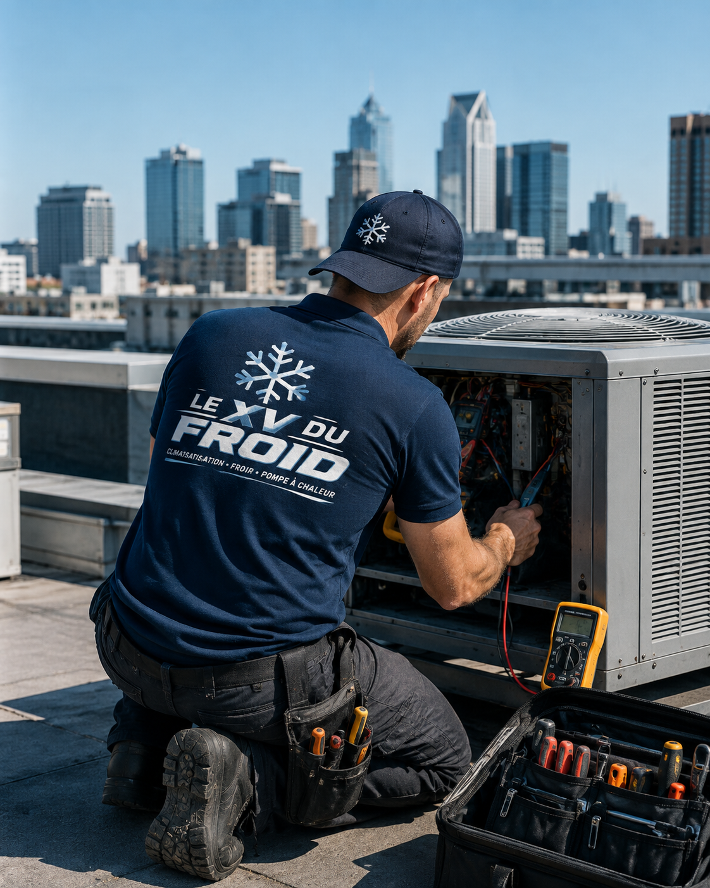

Installation climatisation Conflans-Sainte-Honorine · Yvelines (78)
Installation de climatisation à Conflans-Sainte-Honorine.
Installateur de climatisation à Conflans-Sainte-Honorine pour maison à flanc de coteau, appartement du Vieux Conflans, commerce et local en bord d’eau. Les contraintes d’humidité et de pente sont prises en compte dès l’étude.
- Étude sur place
- Devis détaillé
- Essais à la mise en service

Conflans-Sainte-Honorine · 78700
Conflans-Sainte-Honorine : la ville des bateliers, entre Seine et Oise.
Conflans s’est construite au confluent de la Seine et de l’Oise et reste marquée par la batellerie. Les quartiers étagés sur le coteau, le Vieux Conflans et les rives offrent des configurations très variées de maisons et d’immeubles, avec des pentes, des escaliers et des terrains parfois contraints.
- Surface, volume, orientation et isolation
- Emplacement possible du groupe extérieur
- Voisinage, copropriété, accès et condensats
- Essais, réglages et conseils d’utilisation
Installation climatisation Conflans-Sainte-Honorine
Pentes, escaliers et humidité des bords d’eau.
Sur les hauteurs, certaines maisons s’ouvrent sur des vues dégagées mais restent exposées au soleil l’après-midi. Les rues en pente et les escaliers complexifient la livraison du matériel : nous les anticipons dès la visite, avec un repérage de l’accès pour le groupe extérieur et les outils.
Près de l’eau, l’air est plus humide et les structures métalliques se corrodent plus vite. Le groupe extérieur est posé sur un support adapté, relevé du sol, et nous veillons à ce que les condensats s’évacuent sans stagner. C’est une installation classique, mais soignée pour durer.
Conflans compte aussi des péniches aménagées et des bâtiments liés à la vie fluviale. Pour un logement atypique, nous étudions au cas par cas ; certaines configurations exigent des solutions spécifiques et nous le disons clairement avant devis.

Quand le terrain impose son plan de pose.
Une maison à flanc de coteau peut avoir son accès technique à l’arrière ou à un niveau inférieur. Nous repérons le chemin le plus simple pour le groupe, le point d’évacuation et le passage des liaisons, afin d’éviter les trajets trop longs qui pénalisent le rendement.
- Repérage de l’accès pour matériel et groupe
- Groupe surélevé pour résister à l’humidité
- Liaisons les plus courtes possible
Contraintes du lieu
Les contraintes locales à Conflans-Sainte-Honorine.
Accès : ruelles étroites, escaliers, stationnement limité dans le Vieux Conflans. Matériel : groupe protégé de l’humidité et de la corrosion près de l’eau. Voisinage : maisons très proches sur les pentes, donc attention au bruit.
Zones inondables : certains secteurs de bord de rivière sont concernés. Pour un groupe situé près du sol, nous le surélevons et prévoyons un support robuste, sans prétendre éliminer un risque qui dépasse le cadre d’une installation de clim.
Choix du système
Choisir l’appareil selon la maison et le terrain.
Pour une maison en hauteur avec chambres à l’étage, un mono-split dans la chambre principale suffit souvent. Pour un appartement de centre, un multi-split limite le nombre de groupes à loger sur la façade.
Dans un commerce de quai ou de rue passante, la température doit rester stable malgré les ouvertures de porte fréquentes. Une unité à diffusion large placée loin de l’entrée évite les courants d’air et les pertes d’énergie.
- Mono-split : chambre, bureau, petit commerce.
- Multi-split : appartement avec plusieurs pièces à traiter.
- Cassette : commerce avec faux plafond.
- Réversible : appoint hivernal pour pièce isolée.
Recherches précises
Les demandes à Conflans-Sainte-Honorine.
Habitants du coteau, commerçants des quais, professionnels de santé et petites entreprises : les demandes sont variées et chacune est étudiée sur place.

Commerces de rue, quais et services de proximité.
Pour un restaurant, un café ou une boutique, nous tenons compte de l’ouverture fréquente des portes, des apports de chaleur de la cuisine ou du matériel, et du besoin de discrétion sonore. L’équipement doit rester accessible pour un entretien régulier.
- Dimensionnement tenant compte des ouvertures de porte
- Diffusion loin des zones de passage
- Maintenance simple et rapide
Méthode
Notre méthode pour une installation à Conflans-Sainte-Honorine.
À Conflans, la visite est surtout logistique : qu’est-ce qui monte, comment, par où ? Nous photographions les accès, mesurons les distances entre intérieur et groupe et repérons le point d’évacuation le plus simple.
À la livraison, nous testons chaud et froid, vérifions les raccordements, l’évacuation et expliquons l’usage de l’appareil. Une fiche d’entretien précise les gestes à effectuer et les fréquences recommandées.
Prix et devis
Un prix qui reflète la configuration du terrain.
Le tarif dépend de la puissance, de la longueur des liaisons, du type de support, de l’accès pour le matériel et de la complexité de la pose. Un chantier en haut d’un escalier ne se chiffre pas comme un rez-de-chaussée.
Notre devis liste chaque opération : matériel, pose, raccordement, support, évacuation, mise en service. Vous pouvez en discuter chaque ligne avant validation.
FAQ
Questions fréquentes : climatisation à Conflans-Sainte-Honorine.
La proximité de la Seine pose-t-elle problème pour une clim ?
Pas fondamentalement. Nous protégeons les liaisons et le groupe contre l’humidité et surélevons le matériel si nécessaire. Un entretien régulier reste conseillé.
Peut-on poser une clim sur une maison en pente ?
Oui. Nous étudions le chemin d’accès, la fixation du groupe et la longueur des liaisons avant de proposer un devis.
Quels quartiers de Conflans couvrez-vous ?
Le Vieux Conflans, Fin d’Oise, Chennevières, les bords de Seine et d’Oise, ainsi que les communes voisines.
Climatisez-vous des locaux près de l’eau ?
Oui, avec un matériel et des fixations adaptés aux environnements humides, et un suivi d’entretien conseillé.
Combien de temps dure une pose à Conflans ?
Un mono-split se pose généralement dans la journée. L’accès difficile, par escalier ou ruelle, peut allonger légèrement la durée.
Pouvez-vous intervenir sur un appareil installé par quelqu’un d’autre ?
Oui : diagnostic, entretien, remise en service. Nous travaillons sur toutes les marques courantes.
Secteurs couverts
Installation climatisation dans tout Conflans-Sainte-Honorine.
Nous intervenons dans toute la commune : Vieux Conflans, Fin d’Oise, Chennevières et les bords de Seine et d’Oise. L’organisation du chantier s’adapte à chaque accès.
Demander une étude à Conflans-Sainte-HonorineMaillage utile
Pages proches et guides utiles.
À lire aussi : installation climatisation Poissy, installation climatisation Sartrouville, toutes nos zones d’intervention, choisir la puissance d’une climatisation, entretien d’une climatisation.
Transparence
Un devis clair avant toute intervention.
Vous savez ce qui est prévu, pourquoi c’est nécessaire et à quel tarif avant que le technicien commence. Puis contrôles et essais avant son départ.